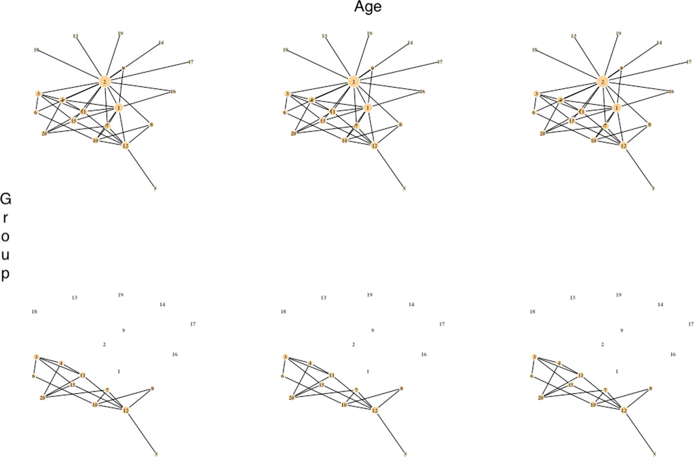
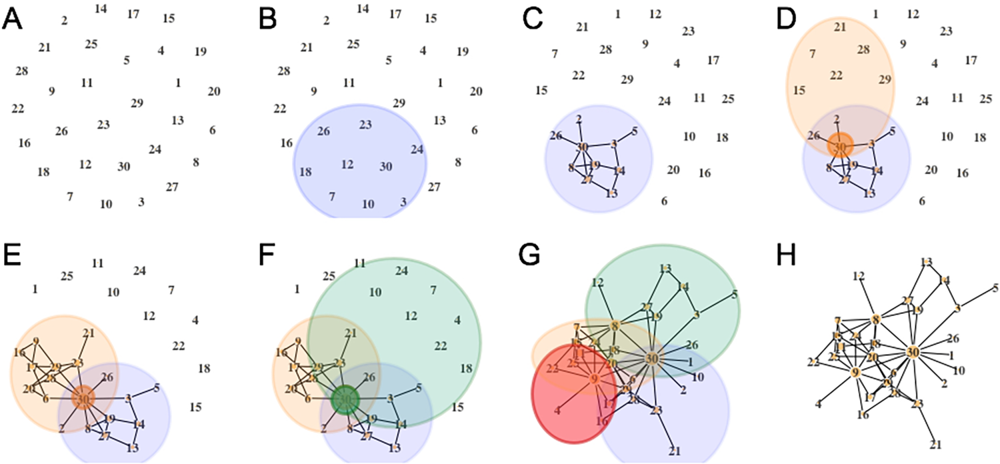
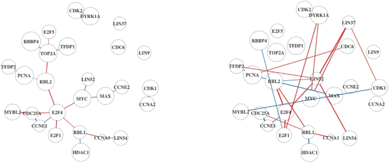
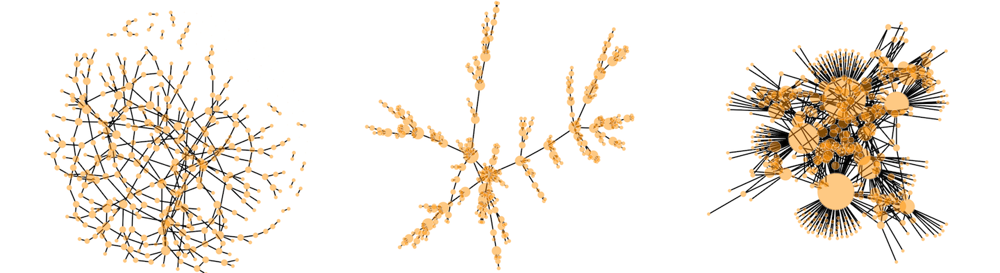
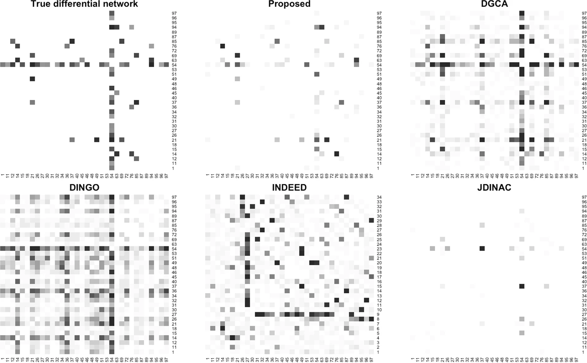
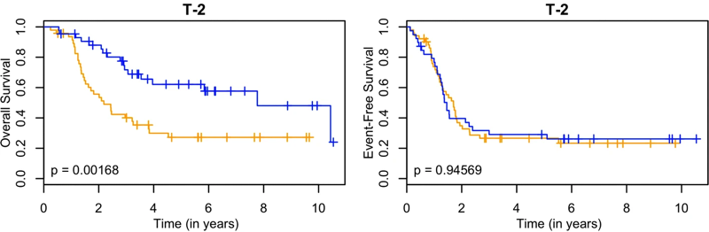
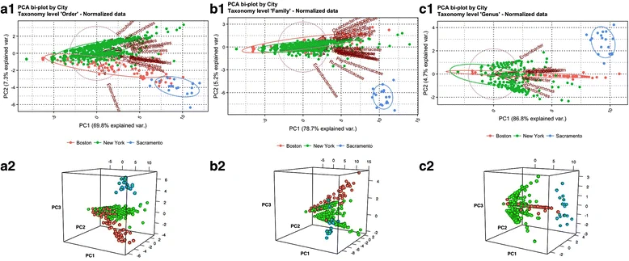

Tyler Grimes
About
Posts
Talks
Papers
CV
Categories
All
(7)
Publications
Order By
Default
Title
Date - Oldest
Date - Newest

A pseudo-value regression approach for differential network analysis of co-expression data
In
BMC Bioinformatics
Jan 9, 2023

A novel probabilistic generator for large-scale gene association networks
In
PLOS ONE
Nov 12, 2021

The Analysis of Gene Expression Data Incorporating Tumor Purity Information
In
BMC Bioinformatics
Aug 23, 2021

SeqNet: An R Package for Generating Gene-Gene Networks and Simulating RNA-Seq Data
In
Journal of Statistical Software
Jul 10, 2021

Integrating gene regulatory pathways into differential network analysis of gene expression data
In
Scientific Reports
Apr 2, 2019

Predicting survival times for neuroblastoma patients using RNA-seq expression profiles
In
Biology Direct
May 30, 2018

Unraveling bacterial fingerprints of city subways from microbiome 16S gene profiles
In
Biology Direct
May 22, 2017
No matching items